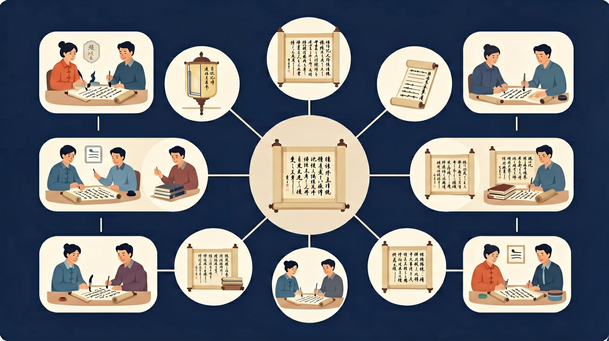

学会写日记，记录每一天的美好时光！
成为日记小达人！✨
告诉我你今天（或某天）做了什么，我帮你把它改写成一篇生动有趣的日记，展示如何运用细节和情感描写。
📌 你可以把上面的内容复制给 AI 助手（如 DeepSeek、ChatGPT），开始互动练习！
回忆：今天学了哪些关键词和规则？试着说出来。
用自己的话解释今天学的核心概念，不看书能说清楚吗？
用今天的知识解决一个实际问题，或写一个新例子。
把今天的知识与已有知识联系起来：有什么共同点？有什么区别？能不能自己创造一道新题？
先独立作答，再点选项查看对错与错因。
写日记时，以下哪项是必须包含的内容？
以下哪种描写方式能使日记更生动？
以下哪项是日记写作中需要注意的？
写日记时，应该记录____和____。
答案：日期、天气
日记的基本格式要求记录日期和天气，这是日记的重要组成部分。
为了使日记更生动，可以使用____和____。
答案：形容词、比喻
使用形容词和比喻可以使日记内容更加生动具体。
以下哪项是日记写作的正确方式？
请观察你的一天，记录下发生的事情，并尝试加入细节描写。
❓ 为什么日记一定要写天气和心情？
❓ 日记可不可以写今天打游戏的事？
❓ 老师怎么知道我日记写的是真事还是编的？
学完这一课，这些问题你都能自信地回答。
🎯 能说出日记的3个基本要素（时间、事件、感受）
🎯 能判断例文是否符合日记格式要求
🎯 能分析优秀日记的选材特点
日记像三明治：时间天气是面包，事件是肉，感受是酱料
日记是给自己看的成长相册，不是作业任务
比流水账多心情，比作文少套路
观察蚂蚁搬家也能写，关键写出'我'的发现
下次旅游时，用日记方法记录见闻
✅ 至少写1处细节+1个心情
💡 混淆'记录'与'写作'区别
✅ 用'今天真的...'开头检查真实性
💡 误解'有趣的事'就要编造
And：学生知道日记是记录生活的方式
But：经常忘记写日期/星期/天气等要素
Therefore：帮学生建立规范的日记格式意识
日记要有'三件套'：1.顶格写日期（2023年9月1日）和星期（星期五），2.另起一行写天气（晴），3.最后空两格开始写正文。比如：'2023年9月1日 星期五 晴 今天体育课我跳绳跳了128下，破了班级记录！'少了任何一件套，日记就像没穿校服一样不完整哦！
🌍 就像妈妈发朋友圈必须配图+文字+定位，昨天她发'超市鸡蛋特价4.5元/斤'就忘了加定位，结果奶奶跑错超市了。
下面哪篇日记格式完整？
And：学生会用'今天很开心'概括事情
But：像看模糊照片看不清细节
Therefore：训练用数字和动作把日记写生动
好日记要像放大镜看蚂蚁：1.数清楚（蚂蚁有6条腿），2.看动作（左前腿在擦触角）。例如写吃冰淇淋，不要只说'好吃'，要写'粉色的草莓冰淇淋球滚进嘴里，3秒钟就化成了甜甜的糖水，我赶紧又舔了2大口'。数字和动作就像日记的调味料！
🌍 就像你给同学讲奥特曼卡片，如果说'这张很厉害'别人听不懂，但说'这张赛罗奥特曼攻击力15000点，必杀技是艾梅利姆切割'就超有吸引力。
哪个句子最适合放进日记？
And：学生能记录事件经过
But：日记像白开水没有心情味道
Therefore：教学生用比喻表达真实情感
心情要像画画调颜色：开心是红色太阳（'我举着100分试卷蹦得像跳跳糖'），难过是灰色乌云（'书包里的牛奶洒了，作业本湿出5朵棕色小花'）。比如写迟到可以这样画心情：'眼看校门在10米外关闭，我的心像被捏扁的易拉罐哐当响'。记住，日记是你心灵的照相机！
🌍 就像你玩《原神》时，抽到五星角色会大喊'欧皇附体！'，抽不到会说'非酋本酋了'，这些都是心情颜色呀。
哪句话正确使用了心情比喻？